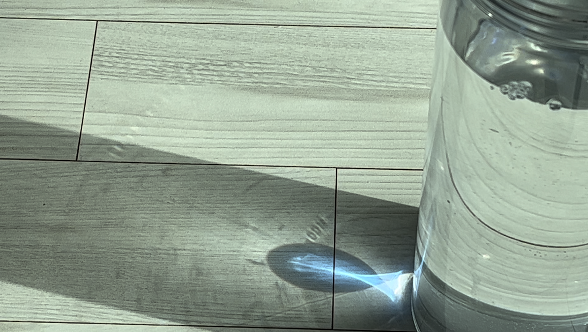
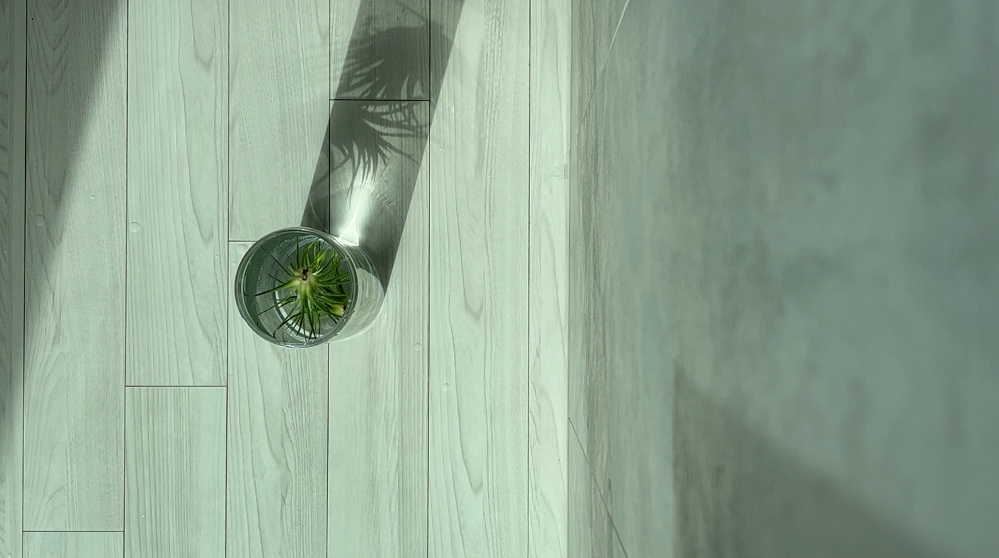
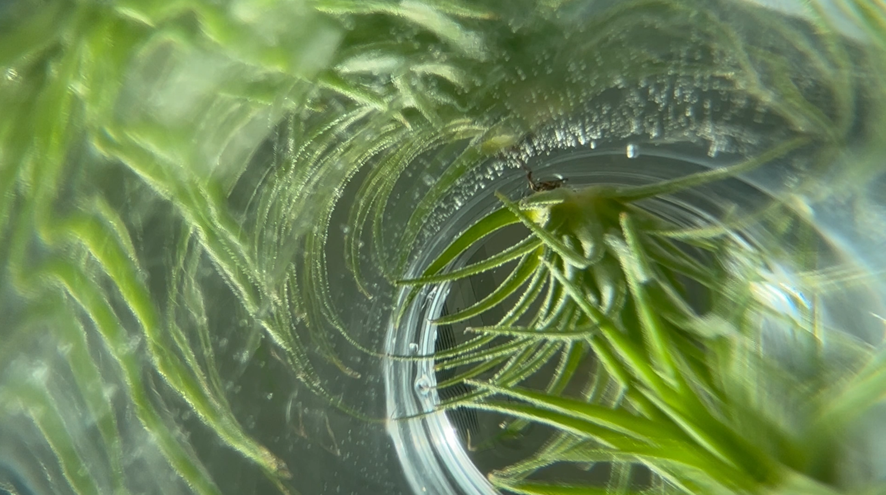
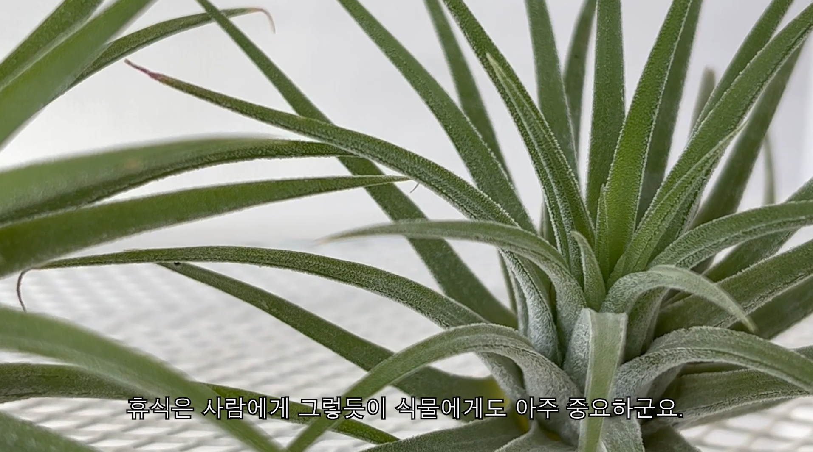

이오난사 식물 다큐 | 학교 입학 후 처음 만든 영상물로, 반려식물 이오난사에 대한 영상입니다 |
|---|
아카이빙 코멘트
학교에 입학한 후 처음 만든 영상물이었습니다. 저의 반려식물 이오난사에 대한 영상으로, 물을 뿌려 영양분을 줘야 하는 보통의 식물들과 달리 물에 전신을 담가줘야 하는 특징을 ‘휴식’으로 해석하여 스토리를 이어나갔습니다.
빛과 물을 이용해 이오난사의 휴식 과정을 담았습니다. 자연광 아래의 피사체 촬영을 위해 집에 해가 드는 오전 9시에서 정오 사이에 서둘러 촬영했던 기억이 있습니다. 푸른 피사체와 흰 끼가 많은 배경에 노란 타이포 제목으로 따뜻함을 주었고, 검은 테두리의 흰 자막으로 정적인 다큐 분위기를 주었습니다. 그리고 잔잔한 화면의 연속으로 시청자가 보는 내내 편안함을 느끼도록 했습니다.
정리되고 매력적인 화면 연출에 대한 피드백을 받아, 직사광선에 취약하지만 햇빛 아래 있는 이오난사를 주로 연출하여 반려자로서 조금 미안하기도 했습니다. 하지만 그만큼 화면 속에선 소중한 식물이 예쁘게 나와서 기분이 좋았습니다.
 |
 |
 |
 |
|  |  |